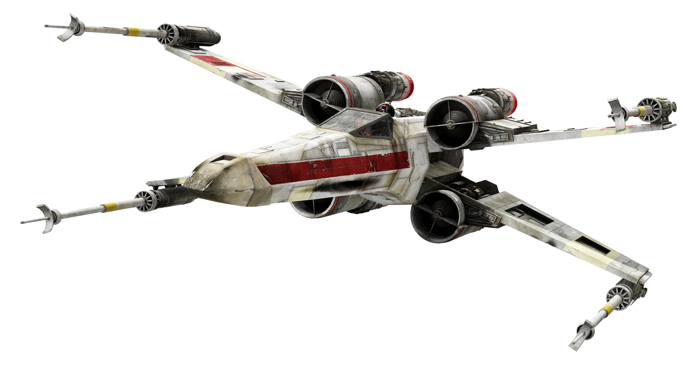
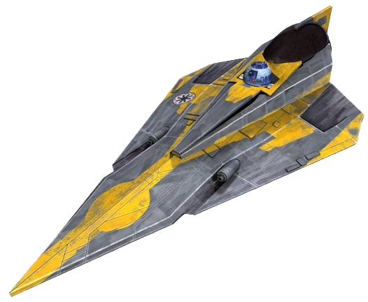

Experiencias Profissionais
| Cargo | Responsável por / Serviço | Periodo | Principais Atividades |
|---|---|---|---|
| Droid Astromecânico | República / Aliança | Guerras Clônicas – Guerra Civil Galáctica | Manutenção de naves, suporte técnico em missões, reparos em voo |
| Assistente Técnico de Voo | Anakin Skywalker | Guerras Clônicas | Apoio em combate, monitoramento de sistemas, ajustes em tempo real |
| Unidade de Suporte Estratégico | Luke Skywalker | Guerra Civil Galáctica | Navegação, transporte de dados, auxílio em missões críticas |
| Especialista em Sistemas e Segurança | Frota Rebelde | Guerra Civil Galáctica | Acesso e desbloqueio de sistemas protegidos, análise de dados e suporte em infiltrações |
Experiencias com espacionaves
Espacionaves operadas e auxiliadas:


